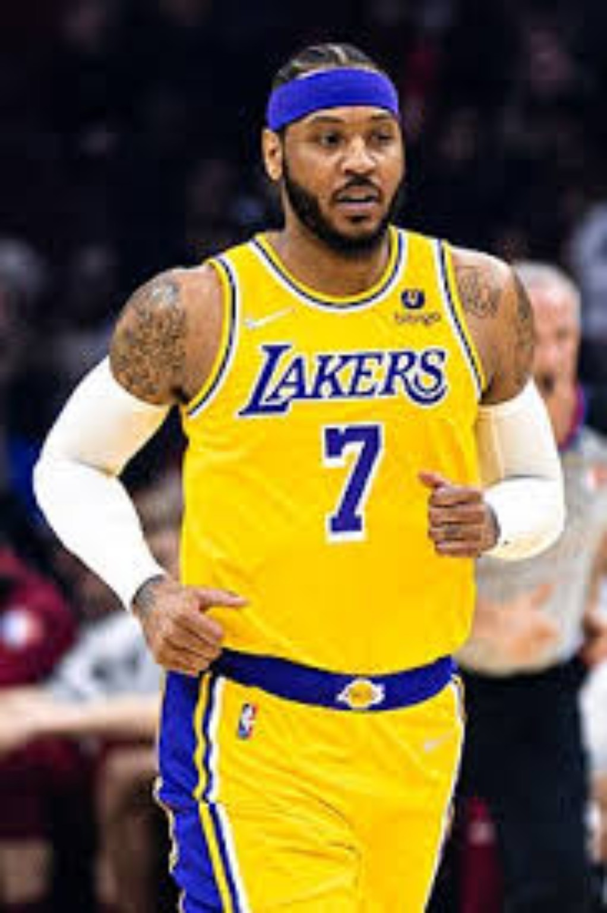

THE
COMEBACK.
Portland did not turn Melo back into the superstar version. It proved something more important: he still belonged in the league, and he could finally thrive in a smaller role.

THE FIRST WIN WAS SIMPLY GETTING BACK ON THE FLOOR.
We already knew Carmelo Anthony could still get a bucket. What Portland proved was that the league had been too quick to decide he no longer belonged.
At 35, Melo started all 58 games he played in 2019–20, averaged 15.4 points and shot 38.5 percent from three. That is not ceremonial production. That is rotation-level NBA value.
HE LEARNED TO PLAY OFF DAME AND CJ.
Melo could still go into the post or isolation bag when Portland needed a late-clock bucket. But the more important development was everything he did without controlling the possession.
He learned to space around Damian Lillard and CJ McCollum, accept fewer touches and become a complementary scorer without giving up the parts of his game that still worked.
That was the adjustment critics kept saying he would never make.

AT 37, HE COULD STILL HELP.
The Lakers season was less about chasing an old version of Melo and more about finally playing with LeBron James while still being able to contribute.
Los Angeles had a disappointing season, but Melo was one of the brighter offensive pieces. At 37, he averaged 13.3 points in 26 minutes and shot 37.5 percent from three.
That is what made the final chapter feel better. He was not hanging on as a mascot. He could still play.
THREE EXTRA YEARS CHANGED THE LAST IMAGE.
Portland and Los Angeles did not create Melo's Hall of Fame résumé. That work had been done over nearly two decades.
But those seasons let him add points, move into the NBA's top-10 scoring territory at the time, prove he could accept a smaller role and leave the league in a more favorable light than the Houston ending would have allowed.
He retired with 28,289 points and was inducted into the Naismith Memorial Basketball Hall of Fame in 2025 as a first-time finalist.